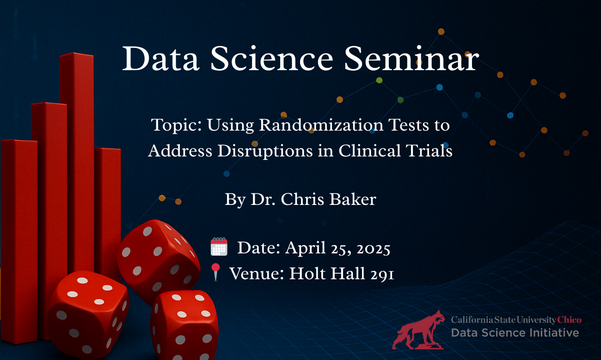

When the Unexpected Happens, Statistics Steps Up.
Join us for a special seminar hosted by the Data Science Initiative at CSU Chico.
Dr. Chris Barker will present on how randomization tests can help make valid inferences when clinical trials are disrupted by unexpected events such as pandemics, wars, or natural disasters.
üóìÔ∏è Date: April 25, 2025
üïê Time: 1:00 PM ‚Äì 2:00 PM
üìç Location: Holt Hall 291
üé§ Speaker: Dr. Chris Barker
üìÑ View the related research paper
From pandemic lockdowns to war zones, disruptions in clinical trials are increasingly common. This talk will explore how modern nonparametric statistical methods help ensure valid results, even when assumptions break down.
